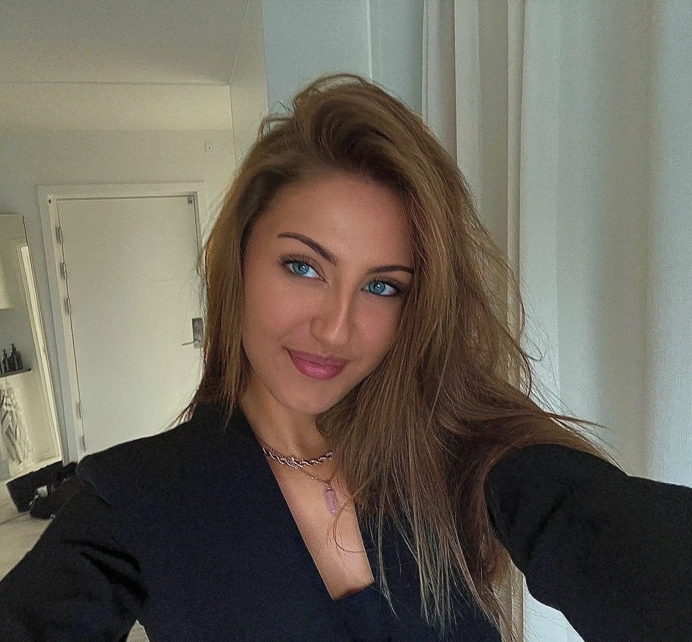
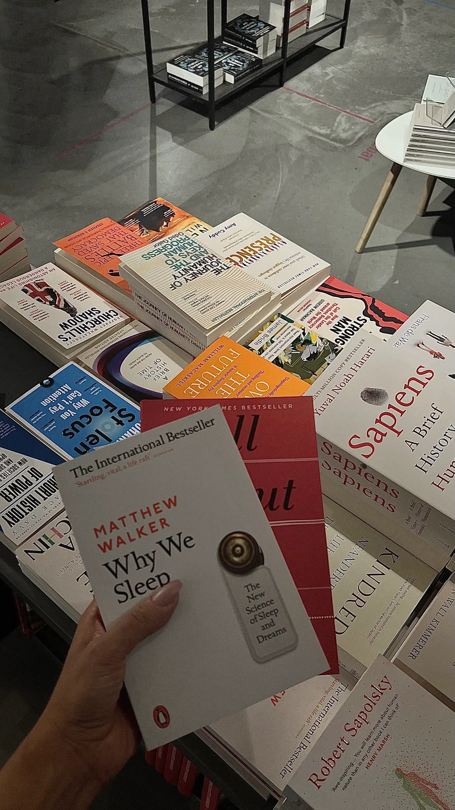
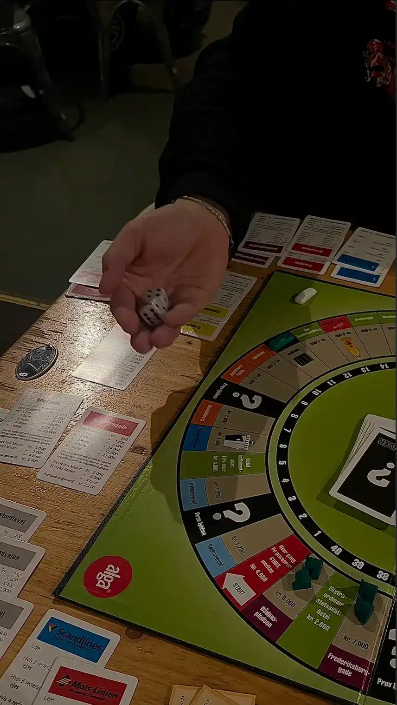
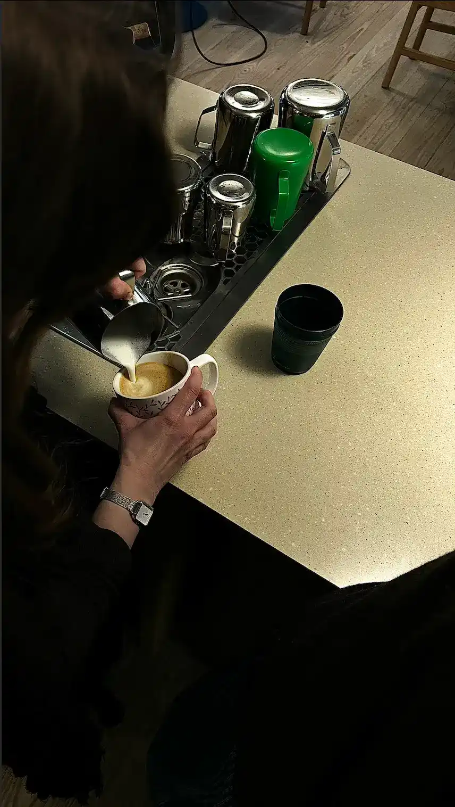

Maja Holgersen
Kreativ sjæl, kaffeentusiast og multimediedesignstuderende med forkærlighed for gode idéer og flotte detaljer. Jeg elsker at skabe, lære nyt og fordybe mig i projekter - uanset om det handler om design, sociale medier eller mit næste hækleprojekt.
Se mine projekter →Hvem er jeg?
Jeg hedder Maja Holgersen, er 25 år og bor i Lyngby sammen med min kæreste. Når jeg ikke sidder foran computeren, kan man som regel finde mig med næsen begravet i en bog, i gang med et hækleprojekt, der startede som “noget hurtigt”, eller midt i et intenst brætspil, hvor jeg tager sejren lidt for seriøst.
Jeg elsker at være kreativ og kaster mig ofte ud i nye projekter, bare fordi jeg synes, det er sjovt at lære noget nyt. Samtidig er jeg typen, der altid har en ny idé på lager - også selvom jeg allerede har fem andre projekter i gang.
Ved siden af studiet er jeg frivillig barista og SoMe-ansvarlig hos Ten Pillars. Her får jeg lov til at kombinere min interesse for fællesskab, kommunikation og selvfølgelig god kaffe. Der er noget særligt ved at skabe et sted, hvor mennesker mødes, og hvor en god kop kaffe kan gøre dagen lidt bedre.
Jeg sætter pris på kreativitet, humor og de små ting i hverdagen. Og hvis du nogensinde mangler en anbefaling til en god bog, et brætspil eller en kaffebar, så har jeg sandsynligvis allerede en liste klar.
Fun Facts!
- Jeg har en fobi for hvepse, men mit yndlingsdyr er en bi.
- Jeg er stenbuk.
- Jeg er nybagt hundemor til en lille labradorhvalp.
- Jeg er ubesejret i Vildkatten.
- Jeg er kæmpe Harry Potter-fan



Hvad kan jeg tilbyde?
Jeg kan tilbyde en kombination af kreativitet, struktur og stærke kommunikative evner. Jeg trives med at arbejde både selvstændigt og i samarbejde med andre og motiveres af at skabe løsninger, der er både funktionelle, brugervenlige og visuelt gennemarbejdede. Jeg er nysgerrig, engageret og detaljeorienteret, og jeg lægger vægt på at levere et resultat, jeg kan være stolt af.
Gennem min uddannelse har jeg opbygget kompetencer inden for webdesign, frontendudvikling og brugeroplevelse. Jeg har erfaring med hele processen fra research og idéudvikling til design, kodning, test og færdig implementering. Derudover har jeg arbejdet med både individuelle projekter og gruppeprojekter, hvor samarbejde, kommunikation og projektstyring har været centrale elementer.
Jeg har også erhvervserfaring med sociale medier og digital kommunikation gennem mit arbejde som SoMe-manager hos Dorsia Copenhagen, hvor jeg producerede indhold, planlagde opslag og arbejdede med natklubbens sociale medier. Samtidig er jeg frivillig SoMe-ansvarlig hos Ten Pillars, hvor jeg bidrager med indhold til sociale medier og hjælper med at styrke kommunikationen omkring kaffebaren og dens fællesskab.
Kontakt mig
Har du spørgsmål, feedback eller bare lyst til at sige hej? Så er du altid velkommen til at kontakte mig.